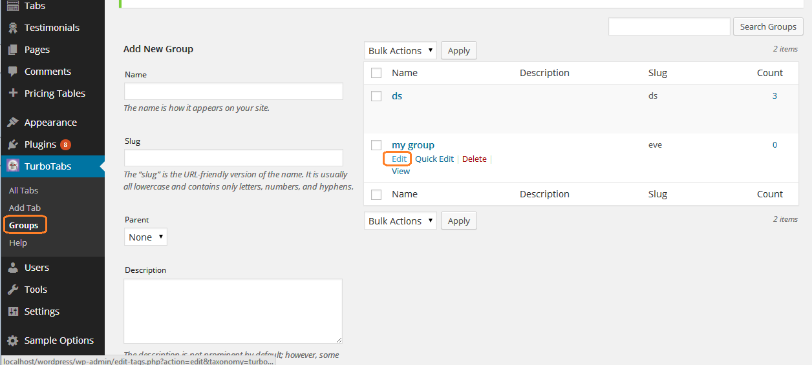

Thank you for purchasing my plugin. If you have any questions that are beyond the scope of this help file, visit my support forum. Thanks so much!
TurboTabs functionality can be represented through 4 steps:
As you can see process is simple. You assign number of tabs under one group, customize it as you wish - and then that group is inserted via shortcode, creating a beautifull tab for you. Whole process can be monitored via Live Preview window that is available at the Group editing page (you can slide it down from top of the screen by clicking the Live Preview button)
To create Tab group, you can either go to the Groups and then add it from there, or you can add it directly while creating your first tab (TurboTabs->Add tab menu from the admin dashboard)
Once you create your tabs and assign them to a newely created group, it's time to customize it. To do that go to TurboTabs->Groups.
Here, you need to hover with your mouse over selected group, and when submenu appears click on the edit link.
This will lead you to the settings page where you can edit group name, slug and it's core - the options.